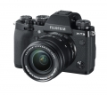

器材库 > APS及其以下画幅可换镜头数码相机 > X-T3

规格总览
产品类型
APS画幅可换镜头数码相机
发布日期
2018-09-06
影像规格
影像传感器
X-Trans CMOS 4
影像传感器尺寸
23.5×15.6mm
有效像素
2610万
影像处理器
X-Processor 4
静态图像格式
JPEG, RAW, RAW+JPEG
静态图像尺寸
L: (3:2) 6240×4160 / (16:9) 6240×3512 / (1:1) 4160×4160 M: (3:2) 4416×2944 / (16:9) 4416×2488 / (1:1) 2944×2944 S: (3:2) 3120×2080 / (16:9) 3120×1760 / (1:1) 2080×2080
短片格式
MOV
短片尺寸
DCI 4K：4096×2160, 4K：3840×2160, 全高清：2048×1080, 全高清：1920×1080
音频格式
线性PCM
防抖系统
支持光学防抖(OIS)镜头
除尘系统
传感器清洁系统：超声波振动
镜头和对焦
镜头卡口
Fujifilm X
对焦系统类型
智能高速AF（TTL对比AF/TTL相位检测AF）
对焦模式
单幅AF / 连续AF / MF
手动对焦
支持
曝光控制
测光系统
TTL 256区测光
测光模式
中央重点测光, 点测光, 平均测光, 多重测光
曝光模式
P（程序AE）/ A（光圈优先AE）/ S（快门速度优先AE）/ M（手动曝光）
胶片模拟模式
16种模式（PROVIA/标准、Velvia/鲜艳、ASTIA/柔和、经典正片、PRO Neg Hi、PRO Neg. Std、 黑白、黑白+黄色滤镜、黑白+红色滤镜、黑白+绿色滤镜、SEPIA、ACROS、ACROS+黄色滤镜、ACROS+红色滤镜、ACROS+绿色滤镜、ETERNA/影院）
创意滤镜
玩具相机、微缩景观、流行色彩、高调、低调、动态色调、柔焦、局部色彩（红色/橙色/黄色/绿色/蓝色/紫色）
快门类型
焦平面快门
快门速度
机械快门 P模式：4秒至1/8000秒A模式：30秒至1/8000秒S/M模式：15分钟至1/8000秒 B门模式：高达60分钟 电子快门 P模式：4秒至1/32000秒A模式：30秒至1/32000秒S/M模式：15分钟至1/32000秒 B门模式：1秒固定
曝光补偿
±5EV以1/3EV级调整
自动包围曝光
幅：-2, -3, +3, +2, ±9, ±7, ±5, ±3；步长：1/3EV、2/3EV、1EV、4/3EV、5/3EV、2EV、7/3EV、8/3EV、3EV
ISO感光度
标准输出感光度：自动1 /自动2 /自动3（最高达ISO12800）/ ISO160至12800（1/3步长）扩展输出感光度：ISO80 /100 /125 / 25600 / 51200
白平衡
自动场景识别 / 自定义1-3 / 色温选择(2500K~10000K) / 预设：晴天、阴天、荧光灯（日光）、荧光灯（暖白）、荧光灯（冷白）、白炽灯、潜水灯
自拍
10秒/2秒
连拍
30幅/秒
取景器/显示屏
取景器
OLED电子取景器
取景范围
100%
取景放大倍率
0.75倍
屈光度调节范围
-4-+2m-1
LCD尺寸
3.0英寸
LCD像素
104万
视野率
100%
LCD特性
触摸屏
文件输入/输出
记录媒介
SD/SDHC, SDXC
数据接口
USB C 型，超速 USB3.1 GEN1
视频/音频接口
D型HDMI接口
无线功能
Wi-Fi, 蓝牙
电源
电池
NP-W126S锂离子电池
续航能力
拍摄静态图像：使用XF35mmF1.4 R时约390幅拍摄短片：[4K]：约40分钟(29.97p) [全高清]：约45分钟(59.94p)
机身规格
颜色
银色, 黑色
尺寸
132.5×92.8×58.8mm
重量
仅机身约489g / 含电池和存储卡约539g
其它
配件端口
遥控线, 热靴, 耳机, 三脚架接孔, 麦克风输入端子
工作温度
-10 ~ +40℃
工作湿度
10 ~ 80%
附件
锂离子电池NP-W126S，电池充电器BC-W126S，热靴式闪光灯EF-X8，肩背带，机身盖，带夹，防护罩，夹附加工具，热靴盖，增能竖拍手柄接口盖，接口盖罩（可拆卸），同步端口盖，用户手册
P672018-11-22 15:104.75 分
操作性 5.00功能性 5.00美观性 4.50趣味性 5.00耐用性 4.50性价比 4.50解像力 4.50色彩还原 5.00
匿名网友2018-11-19 16:403.63 分
操作性 4.50功能性 4.50美观性 5.00趣味性 4.50耐用性 4.50性价比 2.00解像力 2.00色彩还原 2.00
huangcheng162018-09-20 16:274.94 分
操作性 5.00功能性 5.00美观性 5.00趣味性 5.00耐用性 5.00性价比 5.00解像力 4.50色彩还原 5.00
产品图 / 样片
X-T3
评测 / 相关文章
- 详细内容 （存档）
- 性价比巅峰微单 Fujifilm X-T3体验
- ［资讯］性能升级富士旗舰无反X-T3新固件发布 （存档）
- ［资讯］APS-C微单旗舰 Fujifilm X-T3外观图赏 （存档）
- ［资讯］看看最新APS-C杰作 富士X-T3全面拆解 （存档）
- ［资讯］DP给出富士X-T3测试结论 （存档）
- ［资讯］富士X-T3动态范围测试公布 （存档）
- ［资讯］富士X-T3采用索尼传感器 （存档）
- ［资讯］不敌D500 富士X-T3高感测试曝光 （存档）
- ［资讯］DP给出富士X-T3画质测试结论 （存档）
- ［资讯］富士X-T3值得拥有 （存档）